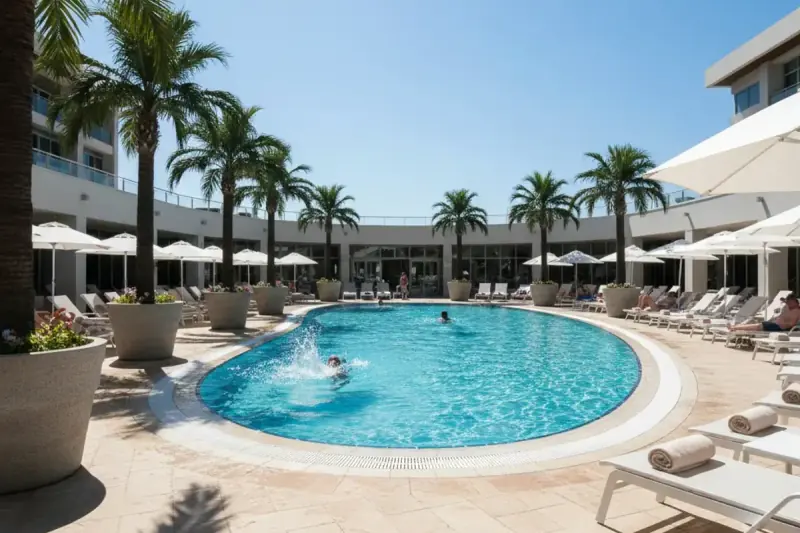
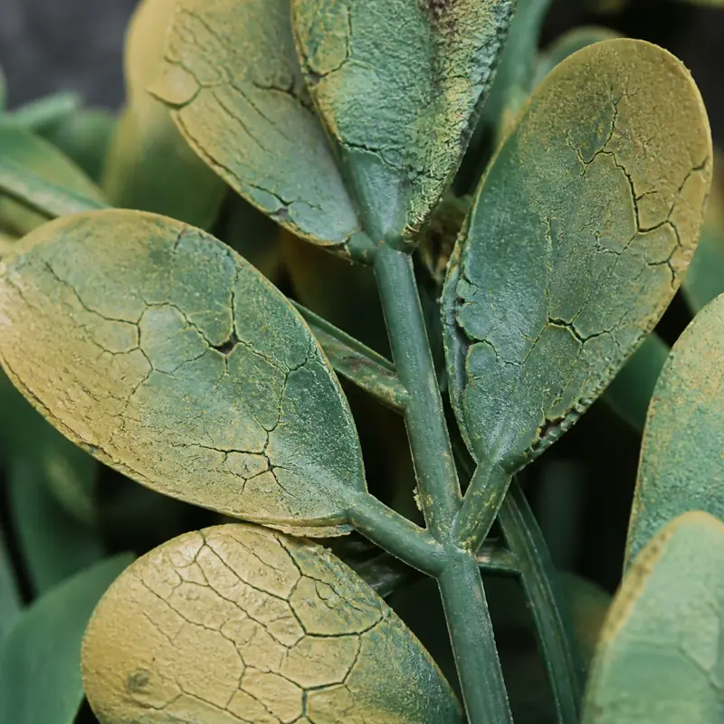
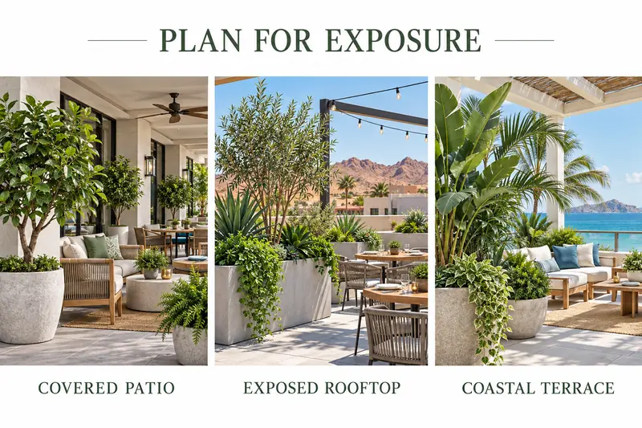

UV Protection for Outdoor Artificial Plants: What Actually Works (and What Fails Fast)

Outdoor commercial artificial plants can look flawless on install day — and tired, faded, and brittle a year later if the materials aren't built for UV exposure.
If you're sourcing faux greenery for hotels, restaurants, rooftop venues, resorts, or commercial outdoor spaces, here's the simple truth:
UV damage is predictable — and preventable — if you choose the right materials from the start.
In This Article
The Real Problem: UV Doesn't "Stain" — It Breaks Materials
Sunlight doesn't just fade color. Over time, UV exposure causes:
- Pigments to degrade (greens dull, whites chalk, reds shift)
- Plastic to embrittle (cracking, curling, flaking)
- Surface coatings to fail (peeling, patchy discoloration)
This is why two artificial plants can look identical in a catalog and perform completely differently outdoors.
What Outdoor UV Damage Looks Like (So You Catch It Early)
Most installs don't fail overnight. They "age" in a pattern:
- Tips and outer edges fade first (most direct exposure)
- Colors lose saturation, especially on glossy finishes
- Leaves begin to warp or curl in heat
- Eventually the piece reads "plastic" instead of premium
If your display is customer-facing (entrances, patios, pool decks), that drop in perceived quality is the real cost.
What Actually Works: UV-Stabilized HDPE (Built-In Protection)
For outdoor commercial installs, UV-stabilized HDPE is a material option worth specifying and verifying with your supplier.
Why built-in protection matters:
- UV inhibitors are built into the material, not painted on
- A suitable formulation helps protect color throughout the material
- It helps the material resist embrittlement over time
In practical terms, specify outdoor-rated formulations when installations need to stay sharp for years, not just a season. HDPE alone does not mean UV-stabilized: ask for the exact formulation, relevant exposure testing and warranty. No material is immune to weathering.
"UV-Treated" vs "UV-Stabilized": The Difference Matters
You'll see a lot of products marketed as "UV treated." Here's the important distinction:
- UV-treated / coated materials: protection is often surface-level. It may suit partial shade, but performance varies.
- UV-stabilized materials: UV resistance is incorporated into the material. HDPE can be formulated this way; the resin name alone is not proof.
If you're building for high-UV regions or full sun, that difference shows up fast. Confirm what the supplier means by each label.

Illustrative material-condition images, not a controlled exposure test or a product lifespan guarantee.
What About Spray-On UV Protectant?
Spray-on UV protectant can help in certain situations — especially for short-term outdoor use or to add a buffer to an existing installation. LaySun can offer a spray-on application; suitability depends on the product and intended use.
But for long-term outdoor commercial projects:
- Spray-on solutions can wear unevenly
- They require re-application according to the protectant's instructions
- They don't change the base material's weakness
Best rule: spray-on UV protectant can be a helper, but it's not a substitute for inherently UV-stabilized materials. Confirm compatibility and test a discreet area before application.
Location Matters: UV Exposure Isn't Equal Everywhere
A patio install in Northern Europe is not the same as a rooftop in Arizona.
High-UV exposure can accelerate:
- Fade
- Brittleness
- Adhesive and coating breakdown
- Visible "cheapening" of the whole install
If you source plants for multiple regions, you need material selection that matches exposure — not just aesthetics. Consider shade, season, heat, salt and cleaning as well as the regional climate.

The Practical Buying Checklist (Commercial Installations)
Explore our manufacturing and material options, commercial hospitality solutions, and artificial green wall systems when building your project specification.
Before you sign off on outdoor faux greenery, confirm:
- What the core material is (HDPE vs generic plastic)
- Whether UV resistance is stabilized (built-in) vs coated
- Expected lifespan in full sun, supported by product-specific evidence
- Whether warranties and ratings match your climate
- Maintenance requirements, especially for coastal installs
These questions help you avoid projects that need premature replacement.
Want the Visual Proof + Specs?
We put together a free guide showing:
- Before/after UV exposure examples
- Material performance comparisons
- Region-by-region exposure notes
- What to buy for full sun vs partial shade
- Guidance for outdoor artificial flowers and arrangements too